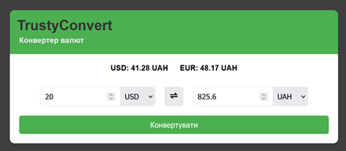
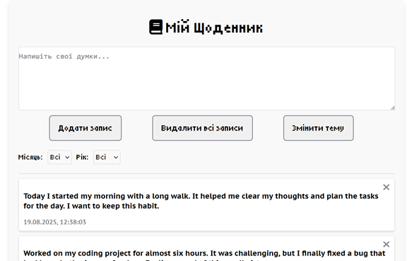
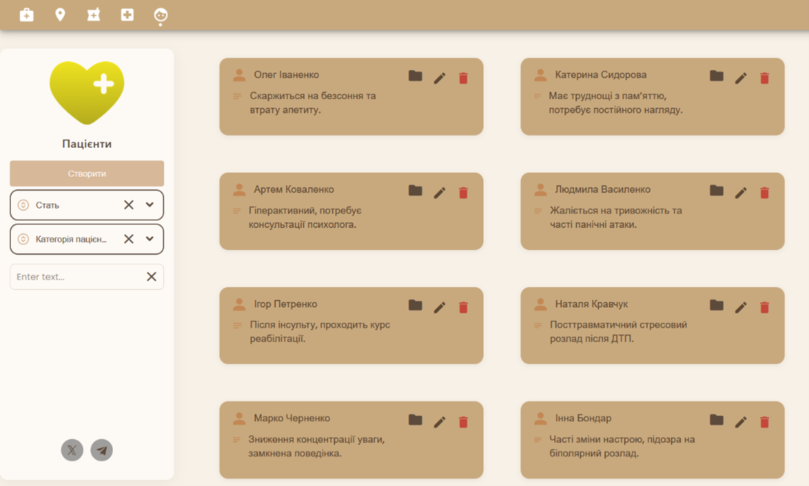

trustyconvert
Description: A simple and user-friendly
application for real-time currency conversion. It fetches the
latest exchange rates using a public API.
My Role / Contribution: Implemented integration
with the API https://api.exchangerate-api.com/v4/latest/USD, built
the interface for amount input and currency selection, and added
responsive design.
Technologies: Angular.

diary
Description: A daily diary application that
allows users to record their actions, thoughts, and ideas.
Includes features for organizing entries with sorting by month and
year, as well as theme switching for a personalized experience. My
Role / Contribution: Designed and implemented the
core functionality for creating and managing diary entries, added
sorting by date, and integrated theme customization.
Technologies:
Angular, TypeScript, CSS, HTML5
GitHub

wHealth
Description: An integrated web and mobile
application for managing medical information. Enables patients and
healthcare providers to store, access, and update medical records,
search clinics and pharmacies. Features include patient history
management, user authorization, adaptive interface, and advanced
search and filtering.
Role / Contribution: Designed and implemented
both front-end and back-end, including database architecture,
interactive modules, and UX/UI components for an intuitive and
responsive experience.
Technologies: Angular, Node.js, Express, MongoDB,
WAW framework, HTML5, CSS.
GitHub